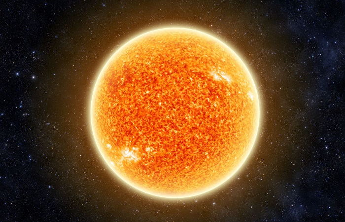
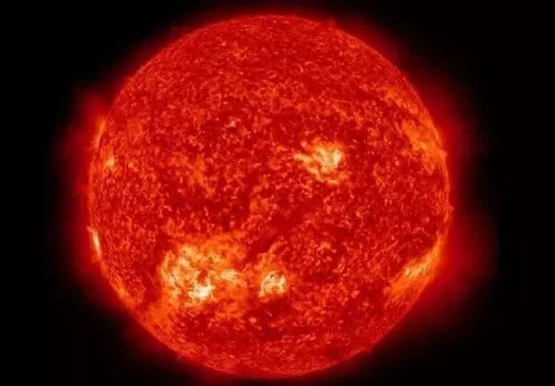

Anã amarela, esse tipo de estrela tem uma massa entre 80% e 120% da massa do sol da Terra. Essas estrelas variam de cor, do branco ao amarelo claro.

Super gigante azul, são muito maiores que o nosso Sol, tem de 10 ate 100 massas solares. A temperatura delas podem chegar a 50.000°C.

Gigante vermelha, fase final pela qual a maioria das estrelas passam, pode se expandir ate 200x o tamanho original.